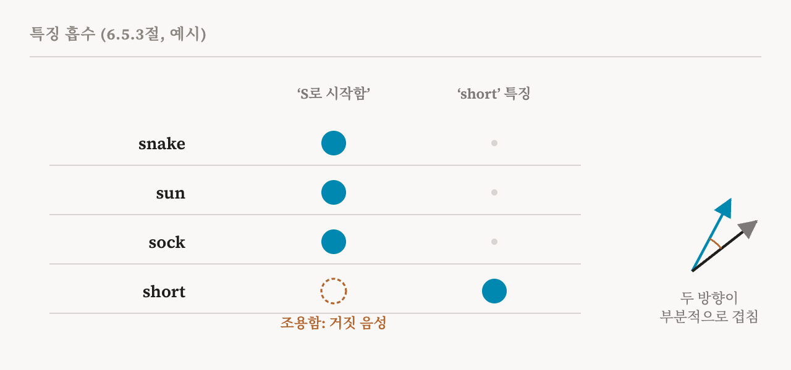
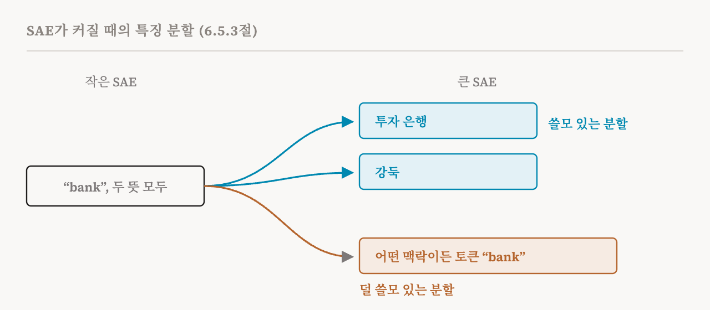

10편과 11편은 희소 오토인코더가 어떻게 작동하고 어떻게 고르는지 설명했습니다. 이번 편은 SAE가 어떻게 잘못되는지로 넘어가는 이 책의 6.5절(37–41쪽)을 다룹니다. 이 책은 이것이 왜 중요한지 분명히 말합니다. SAE는 사람들이 그것으로 하는 주장을 무너뜨리는 체계적인 실패 방식을 보이므로, SAE를 기계적 분석의 도구로 쓰는 사람이라면 이 실패들을 알아야 한다는 것입니다. 실패는 다섯 가지이고, 실무 규칙이 몇 가지 덧붙습니다.
죽은 특징
죽은 특징(dead feature)은 학습 내내 한 번도 켜지지 않거나, 아주 드물게만 켜지는 사전의 항목입니다. 사전의 용량을 낭비하며, 흔하게 생깁니다. 이 책에 따르면 제대로 조정하지 않은 SAE에서는 죽은 특징이 사전의 10%에서 50%를 차지할 수 있습니다.
이 책은 원인을 세 가지 듭니다. SAE의 가중치가 데이터가 거의 없는 활성 공간의 영역에서 출발하면, 그 특징은 배울 신호를 거의 받지 못합니다. 학습 초기에 희소성 벌점이 너무 강하면, 일부 특징이 쓸모를 갖기도 전에 억눌립니다. 그리고 일부 특징이 흔한 패턴을 다 차지하고 나면, 나머지 특징은 보탤 것을 찾지 못해 끝내 켜지지 않을 수 있습니다.
죽은 특징은 찾기 쉽습니다. 학습하는 동안 각 특징이 얼마나 자주 켜지는지 추적하면 됩니다. 입력의 0.01%보다 적게 켜지는 특징을 죽은 것으로 볼 수 있지만, 이 기준은 상황에 따라 달라져야 합니다. 대책도 여럿 있습니다. 재샘플링(resampling)은 죽은 특징을 주기적으로 다시 초기화하면서, SAE가 지금 제대로 재구성하지 못하는 입력 쪽을 향하게 합니다. 희소성 벌점을 처음에는 약하게 시작해서 학습하는 동안 키울 수도 있습니다. 11편의 배치 Top-k 설계도 도움이 됩니다. 복잡한 입력이 특징을 더 많이 쓸 수 있게 해 주기 때문입니다.
중복된 특징
특징 중복(feature duplication)은 사전의 여러 특징이 같거나 아주 비슷한 개념을 담을 때 생깁니다. 원인으로는 희소성 압력이 너무 약한 것, 학습 데이터가 고르지 않은 것, 학습이 중복된 특징을 가진 해에 자리 잡는 것이 있습니다. 중복은 특징의 방향, 곧 디코더의 열을 서로 비교해서 찾을 수 있습니다. 거의 같은 방향을 가리키는 두 특징은 아마 중복입니다. 중복된 특징은 함께 켜지는 경향도 있으므로, 어떤 특징들이 함께 켜지는지에 대한 통계로 한 번 더 확인할 수 있습니다.
흡수와 분할
다음 두 가지 실패는 특징이 포착하는 개념이 얼마나 넓거나 좁은지, 곧 세밀함의 정도에 관한 것입니다.
특징 흡수(feature absorption)는 개념들이 위계를 이룰 때, 곧 일반적인 개념 안에 더 구체적인 개념들이 들어 있을 때 생깁니다. 희소해야 한다는 압력 아래에서 SAE는 일반적인 특징과 구체적인 특징을 둘 다 켜는 것보다 구체적인 특징 하나만 켜는 쪽이 더 싸다는 것을 알게 됩니다. 그래서 구체적인 특징이 일반적인 특징의 방향 일부를 자기 방향으로 흡수하고, 일반적인 특징은 켜져야 할 입력에서 조용히 있게 됩니다.
이 책이 드는 예는 2025년의 한 연구에서 왔습니다. SAE가 S로 시작하는 단어에 켜지는 'S로 시작함' 특징을 배울 수 있습니다. 그런데 토큰 "short"에서는 이 특징이 켜지지 않습니다. 방향이 부분적으로 겹치는 'short' 전용 특징이 대신 켜지기 때문입니다. 'S로 시작함' 특징을 탐지기로 쓰는 사람은 "short"를 놓치고도 그 사실을 모르게 됩니다.

흡수는 거짓 음성(false negative), 곧 특징이 켜졌어야 하는데 켜지지 않은 경우를 만들어서, 그 특징을 자기 개념의 믿을 만한 탐지기로 쓸 수 없게 만듭니다. 이 책은 이를 잡아내는 방법을 설명합니다. 같은 개념에 대한 선형 프로브를 학습시켜 비교하는 것입니다. 프로브는 강하게 반응하는데 그 특징은 반응하지 않고, 그 대신 다른 켜진 특징의 방향이 프로브와 나란한 입력이 있다면 흡수의 징후입니다.
특징 분할(feature splitting)은 반대 방향의 움직임입니다. 예를 들어 확장 계수를 키워 SAE가 커지면, 작은 SAE가 배운 특징 하나가 여러 개의 다른 특징으로 갈라집니다. 도움이 될 수도, 그렇지 않을 수도 있습니다. 좋은 경우에는 두 가지 뜻의 "bank"에 모두 켜지던 특징이 투자 은행과 강둑으로 갈라져, 각각 더 일관된 특징이 됩니다. 덜 쓸모 있는 경우에는 새 특징들이 어떤 맥락에서든 단어 "bank"를 감지하는 낮은 수준의 탐지기가 됩니다.

두 실패를 함께 놓고 보면 정신이 번쩍 드는 점이 있습니다. SAE에는 특징의 올바른 크기가 하나로 정해져 있지 않습니다. 무엇을 찾을지는 SAE의 크기와 희소성 압력에 달려 있고, 이런 선택에 따라 하나의 개념이 갈라질 수도, 합쳐질 수도, 일부가 흡수될 수도 있습니다.
시드에 따른 불안정성
SAE의 특징은 우연에도 좌우됩니다. 무작위로 정한 초기 가중치, 최적화 과정의 무작위성, 데이터의 순서에 따라 달라집니다. 같은 SAE 설계를 같은 데이터로, 무작위 시드(random seed)만 바꿔 학습시키면 상당히 다른 사전이 나올 수 있습니다. 자주 켜지고 뜻이 분명한 특징은 안정적인 편입니다. 드물거나 특정한 맥락에서만 켜지는 특징은 크게 달라집니다. 이 책은 시드를 바꿔도 그대로 남는 특징이 절반이 안 되는 경우가 많다고 전하며, 다만 더 넓은 의미의 묶음은 더 일관될 수 있다고 덧붙입니다.
이는 SAE 특징 하나에 기댄 주장이 얼마나 무게를 견딜 수 있는지를 제한합니다. 다음 학습에서는 없을지도 모르는 특징을 모델에 관한 사실이라고 부르기는 어렵습니다. 여러 시드의 결과를 모으면 도움이 되지만 계산 비용이 늘어납니다. 이 책은 SAE를 평가할 때마다 재구성 손실과 함께 시드에 따른 특징 안정성도 보고하라고 권합니다.
이것이 진짜 특징인가
가장 깊은 걱정은 식별 가능성(identifiability)입니다. 딕셔너리 학습이 모델의 진짜 특징을, 그런 것이 있다면, 믿을 만하게 되찾는지, 아니면 활성값을 분해하는 그저 그런 여러 방법 가운데 하나를 찾을 뿐인지의 문제입니다.
이 책은 이 질문을 정확하게 적습니다. 활성값이 실제로 어떤 희소한 과정, 곧 진짜 특징 사전과 진짜 희소 계수에 약간의 잡음을 더한 것으로 만들어졌다고 해 봅시다. SAE의 학습이 그 진짜 사전과 계수를, 특징의 순서를 바꾸거나 크기를 다시 맞추는 것처럼 아무 차이도 없는 변화를 빼고 되찾는다면, 그 SAE는 식별 가능합니다.
고전적인 딕셔너리 학습은 언제 이것이 성립하는지 답을 알고 있습니다. 사전의 결맞음(coherence)이 낮을 때, 곧 사전의 항목들이 충분히 직교에 가까울 때 식별 가능성이 성립합니다. 결맞음이 높으면 모호함이 생깁니다. 사전 특징들의 서로 다른 여러 희소한 조합이 같은 활성값을 만들 수 있고, 방법은 그 가운데 무엇이 맞는지 알 길이 없습니다. 대규모 언어 모델의 활성값에서는 복잡한 내부 구조와 특징들 사이의 상관관계 때문에 결맞음이 높은 것을 피하기 어려울 것입니다. 그래서 식별 가능성은 앞의 여러 실패를 이론적으로 설명해 주기는 하지만, SAE에서 여전히 풀리지 않는 문제로 남아 있습니다.
길이 하나 보이기는 합니다. 최근 연구는 고정된 SAE에 맞춰 언어 모델 자체를 미세 조정합니다. 성능은 대체로 유지하면서, 모델의 활성값이 SAE 특징들의 희소한 조합이 되도록 제약하는 것입니다. 2026년의 한 연구는 여기서 더 나아가, 디코더의 방향들이 서로 직교하도록 강제하면서 모델과 SAE를 함께 학습시킵니다. 낮은 결맞음을 직접 강제해서 분해를 유일하게 만들고, 그래서 특징을 믿을 만하게 되찾을 수 있게 합니다. 방법에 맞춰 모델을 바꾸는 것이고, 15편에서 이 생각으로 돌아옵니다.
단의적인 것과 인과적인 것은 다르다
식별 가능성은 두 번째 질문과 이어집니다. 어떤 SAE 특징이 단의적으로 보이고 활성값을 잘 재구성하는 데 도움이 되더라도, 모델의 계산에서 인과적으로 의미 있는 단위가 아닐 수 있습니다. 이 책은 어떤 특징이 어떤 개념을 나타낸다는 주장에 대해 세 가지 시험을 제안합니다.
| 시험 | 질문 | 실패가 뜻하는 것 |
|---|---|---|
| 필요성 | 특징을 제거하면 모델의 응답에서 그 개념이 사라지는가? | 그 개념이 다른 중복된 특징으로도 표현될 수 있음 |
| 충분성 | 이 특징만 켜면 그 개념과 관련된 행동이 나오는가? | 특징 하나만으로는 그 개념을 표현하기에 부족함 |
| 특이성 | 특징의 인과적 효과가 그 개념과 맞고, 그 이상은 아닌가? | 그 특징이 다른 개념도 함께 담고 있음 |
필요성과 충분성은 18편에서 설명을 검증하는 일반적인 어휘로 다시 다룹니다.
이 책의 여섯 가지 권고
이 절은 SAE로 해석 가능성 연구를 하는 사람을 위한 실무 조언으로 끝납니다. 아래에 요약합니다.
| 권고 | 실제로 할 일 |
|---|---|
| 실패 지표를 보고하라 | 재구성 손실과 함께 죽은 특징의 비율, 중복률, 시드에 따른 안정성을 보고 |
| 인과적 관련성을 검증하라 | 제거와 조종 같은 개입으로 필요성, 충분성, 특이성을 시험 |
| 방법을 비교하라 | 안전이 중요한 용도에서는 SAE 특징을 다른 기준선과 비교 |
| 여러 변형을 써 보라 | 게이트, Top-k, JumpReLU는 저마다 다른 편향을 가짐. 여러 변형에서 공통으로 나오는 결과가 더 강함 |
| 식별 가능성의 한계를 인정하라 | SAE 특징을 진짜 특징이 아니라, 타당한 근사 분해 가운데 하나로 제시 |
| 표적 분석에는 대안을 고려하라 | 개념이 정해져 있다면 프로브 같은 지도 학습 방법이 더 믿을 만할 수 있음 |
다섯 번째 권고가 이 절 전체의 정신을 요약합니다. SAE는 모델을 들여다보는 쓸모 있는 방법을 주지만, 특징이 서로 다른 여러 재구성이 똑같이 좋을 수 있습니다. 그 가운데 하나를 모델 자신의 개념 목록으로 여기면, 이 방법이 보여 줄 수 있는 것보다 많은 것을 주장하게 됩니다.
| 용어 | 뜻 |
|---|---|
| 죽은 특징 | 한 번도, 또는 거의 켜지지 않는 사전 항목 |
| 재샘플링 | 죽은 특징을, SAE가 제대로 재구성하지 못하는 입력 쪽으로 다시 시작하게 하는 것 |
| 특징 중복 | 여러 특징이 같거나 아주 비슷한 개념을 담는 것 |
| 코사인 유사도 | 두 방향이 얼마나 같은 쪽을 가리키는지 재는 값 |
| 특징 흡수 | 구체적인 특징이 일반적인 특징의 방향 일부를 가져가서, 일반적인 특징이 경우를 놓치는 것 |
| 거짓 음성 | 탐지기가 켜졌어야 하는데 켜지지 않은 경우 |
| 특징 분할 | SAE가 커지면서 특징 하나가 여러 개로 갈라지는 것 |
| 무작위 시드 | 학습 한 번의 무작위 선택을 정하는 숫자 |
| 식별 가능성 | 학습이 진짜 특징을, 그런 것이 있다면, 믿을 만하게 되찾는지 |
| 결맞음 | 사전의 방향들이 직교에서 얼마나 먼지. 높으면 모호함이 생김 |
| 필요성, 충분성, 특이성 | 특징이 정말로 그 개념을 나타내는지 보는 세 가지 인과적 시험 |
13편에서는 한 층을 넘어섭니다. 특징이 모델을 거치며 바뀌는 과정을 따라가는 트랜스코더, 층간 트랜스코더, 크로스코더입니다.